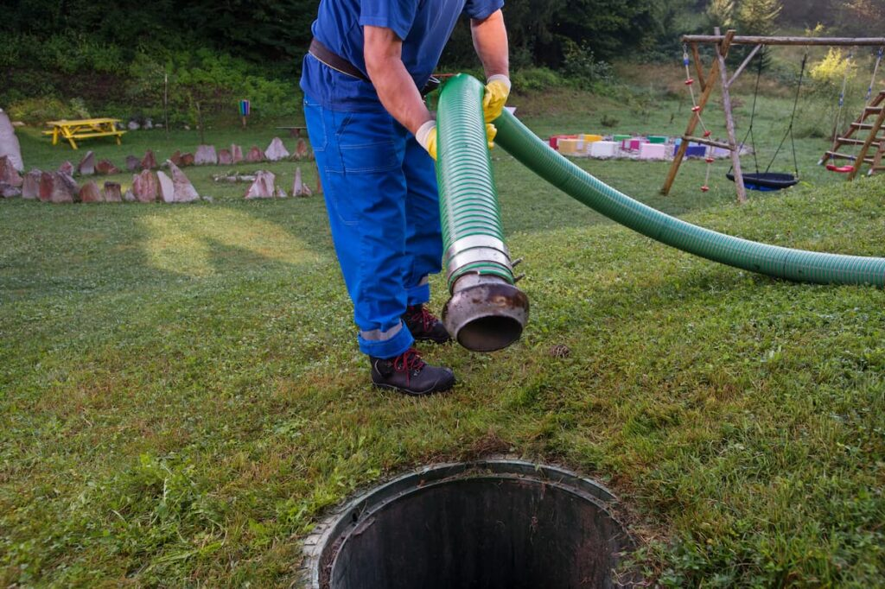
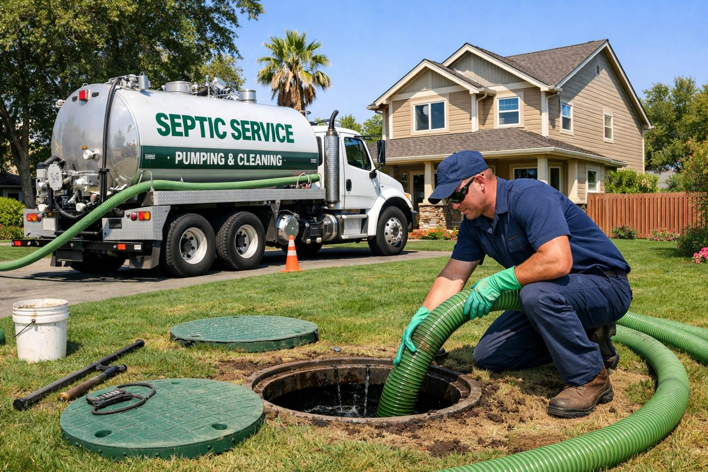

Service Assessment
We review the accessible service area and identify visible conditions that may need attention before pumping begins.

Regular septic tank pumping helps remove accumulated solids, maintain available tank capacity, and support dependable system performance.

A septic tank naturally separates wastewater into layers. Over time, heavier solids settle at the bottom while lighter materials remain near the surface.
Without appropriate pumping, accumulated solids can reduce the tank's usable capacity and may contribute to problems within the septic system.
Professional pumping removes these accumulated materials and provides an opportunity to check the accessible areas of the system.
Removing accumulated solids helps preserve available space inside the tank.
Routine pumping supports the normal movement and treatment of wastewater.
Staying on top of pumping can help reduce the risk of problems associated with excessive solids buildup.
ClearFlow follows a straightforward service approach designed around careful preparation, professional pumping, and clear communication.
We review the accessible service area and identify visible conditions that may need attention before pumping begins.
Accumulated solids and wastewater are removed using appropriate professional pumping equipment.
During service, accessible components can be observed for visible conditions that may warrant further inspection.
Once pumping is complete, the service area is secured and relevant observations can be discussed with you.
Pumping frequency can vary depending on household size, tank capacity, wastewater usage, and system conditions. A professional can help determine an appropriate maintenance schedule for your property.
There is no single pumping schedule that works for every property. Household size, water usage, tank capacity, and the amount of solids entering the system can all affect pumping needs.
In addition to following an appropriate maintenance schedule, homeowners should pay attention to changes around the septic system.
Multiple slow drains may indicate that the septic system needs attention.
Persistent wastewater odors around the tank or drain field should not be ignored.
Unexpected wet areas near septic components may require professional evaluation.
Preventive pumping can be part of a broader septic maintenance plan.


Let ClearFlow help you keep your septic system maintained with straightforward service, professional equipment, and clear communication.